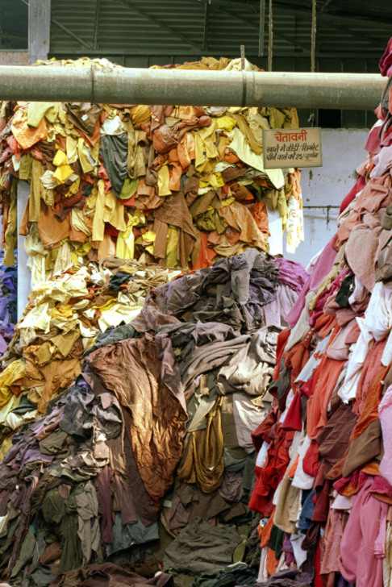

CHÉO Vintage Apparel
table of contents
Why Shop Vintage?
Because...
- the environmental benefits of buying pre-loved clothes are pretty significant.
- you can save money on luxury materials & brands that otherwise go for higher
- unmatched quality by that of most contemporary clothing
- you can rock a timeless, classic style…all while looking unique 💅
- moreover you are helping helping keep perfectly good clothing out of the waste cycle, which reduces both textile waste and over-production: two of the biggest environmental footprints of the fashion industry.
Quality over Quantity: Saying no to Fast Fashion
What is fast fashion?
Contemporary term used by fashion retailers to describe inexpensive designs that move quickly from the catwalk to stores to meet new trends. Today, it is not uncommon for fast-fashion retailers to introduce new products multiple times in a single week to stay on-trend.1
While it may seem to benefit the demands of the consumer, this produces a culture of disposable fashion with shoddy workmanship and emphasis on brief trends. It pollutes our planet through massive production and in the decay of synthetic fabrics, instead of upcycling-reusing them. It’s also a major force that contributes to poor working conditions, low wages, and exploitation of long working hours to industry workers in developing countries.
Because of fast fashion, it has become increasingly difficult to find clothes that last.
Did you know that on average, a fast fashion item begins to deteriorate after only 10 washes?
Why build and ethical closet?
When we think about our environment and how to be more conscious in our interaction with it, most people begin practicing mindful daily consumption. For instance, reducing their meat intake, turning off the lights when leaving a room, walking and biking over driving, reusing bags…etc. Clothing should be no exception.
The fashion industry is the second most polluting in the world after the fossil fuel/energy industry. The costs are high.
Some quick facts for scale:
- Cotton is the crop that requires the most pesticides on earth
- It takes 2,720 liters of water to make a tee shirt. (That's how much we normally drink over a 3-year period)
- In Bangladesh, garment workers earn about $60 dollars monthly - a quarter of a living wage
- Clothing consumption produces 1.5 tons of CO2 per household per year. The equivalent of driving 6,000 cars
- A study2 by WRAP showed that by extending the lifespan of a garment by only a couple of months could lead to a 5-10% reduction in each of the carbon, water, and waste footprints. Just a few months!
SAYING YES TO 🐌 SLOW FASHION - Recommendations
Buy vintage when possible
When you buy vintage you know the energy, the chemicals, the raw materials, and the labor that went into making that garment will have been harnessed and reused.
Buy with intention
Go for clothes that are high quality and ethically manufactured. Be selective and buy with intention. Make sure to value and take care of the pieces you already own and love 🌹 .
C H É O CURATES & STYLES FOR YOU!
Don’t feel like going through the racks yourself? Having a hard time visualizing a piece into an outfit? Not to worry! That is exactly why we started Shop C H É O, to share our thrifting skills with bellas everywhere.
Follow us on Instagram & tell us what you want to see!
Yo can also find us on Depop.
With love,
@shop__CHEO
Footnotes
- Investopedia: Fast Fashion
- WRAP Working together for a world without waste.